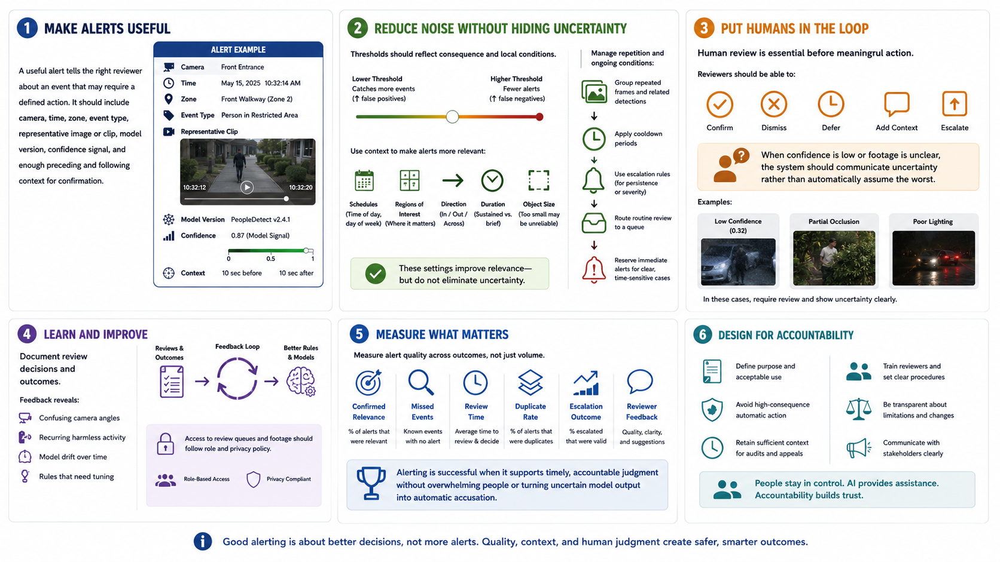

Alert Design and Human Review
Connecting to LMS... Progress: in progress

Narration
A useful alert tells the right reviewer about an event that may require a defined action. It should include camera, time, zone, event type, representative image or clip, model version, confidence signal, and enough preceding and following context for confirmation.
Thresholds should reflect consequence and local conditions. A lower threshold may catch more events while increasing false positives. Schedules, regions of interest, direction, duration, and object size can make alerts more relevant without pretending uncertainty is gone.
Group repeated frames and related detections into one event. Cooldown periods and escalation rules prevent a single ongoing condition from generating dozens of notifications. Route routine review to a queue and reserve immediate alerts for cases with a clear, time-sensitive response.
Human review is essential before meaningful action. Reviewers should be able to confirm, dismiss, defer, add context, and escalate. When confidence is low or footage is unclear, the system should communicate uncertainty rather than automatically assume the worst.
Document review decisions and outcomes. Feedback reveals confusing camera angles, recurring harmless activity, model drift, and rules that need tuning. Access to review queues and footage should follow role and privacy policy.
Measure alert quality through confirmed relevance, missed events, review time, duplicate rate, escalation outcome, and reviewer feedback. Alerting is successful when it supports timely, accountable judgment without overwhelming people or turning uncertain model output into automatic accusation.